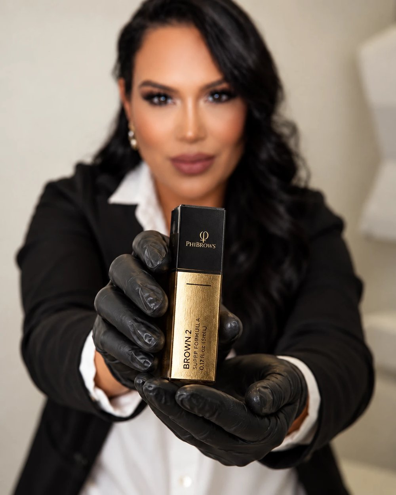

Architecture du regard, tracé personnalisé et techniques poil à poil adaptées à votre morphologie.
Découvrir ↗
International PMU · Le Cannet
La couleur
juste.
Maquillage permanent pensé pour toutes les carnations, avec une expertise particulière des peaux mélaninées.
01 / LES SOINS
Des soins pensés pour
révéler votre beauté.
De la ligne du sourcil à l’éclat de la peau, chaque protocole est personnalisé pour respecter votre identité et votre carnation.
Correction de la tonalité, neutralisation des lèvres foncées et couleur sur mesure au fini naturel.
Découvrir ↗Protocoles ciblés pour purifier, lisser, hydrater et raviver l’éclat de chaque carnation.
Découvrir ↗Courbure, teinture et soin pour ouvrir le regard avec élégance, sans l’alourdir.
Découvrir ↗L’ESSENTIEL, SIMPLEMENT
Neutralisation, micropigmentation
et microneedling.
Trois soins différents, un même objectif : une peau, des lèvres et des sourcils harmonieux, naturels et pensés pour vous. Voici, en clair, ce que c’est.
ÉCLAIRCISSEMENT DES LÈVRES
Neutralisation (éclaircissement) des lèvres
- C’est quoi ?
- Un traitement qui corrige la couleur foncée ou irrégulière des lèvres pour leur redonner une teinte uniforme, claire et naturelle.
- Comment ça marche ?
- Des pigments choisis pour votre peau neutralisent la pigmentation foncée. Si vous le souhaitez, on ajoute ensuite une couleur douce, sur mesure.
- Pour qui ?
- Lèvres foncées, inégales, ternes ou marquées par la pigmentation, sur tous les types de peau.
- Combien de séances ?
- Sur une peau noire ou foncée, il faut en général 2 à 3 séances, espacées le temps que la peau se régénère (28 à 45 jours).
- Résultat
- Des lèvres plus uniformes et plus lumineuses, avec un effet naturel. Le résultat dépend de votre point de départ et de la cicatrisation.
Ce n’est pas un blanchiment de la peau : la teinte est corrigée avec des pigments, pas avec un produit décolorant.
MICROPIGMENTATION
Maquillage permanent des lèvres et des sourcils
- C’est quoi ?
- Le dépôt de pigment dans la couche superficielle de la peau, avec une aiguille très fine, pour dessiner ou colorer les sourcils et les lèvres.
- Comment ça marche ?
- Le tracé et la teinte sont définis avec vous, selon votre visage et votre carnation, puis réalisés avec une machine professionnelle.
- Pour qui ?
- Pour celles qui veulent des sourcils dessinés ou des lèvres colorées sans retouche quotidienne.
- Résultat
- Semi-permanent : la couleur s’estompe progressivement avec le temps, et une retouche permet de la raviver.
La peau se régénère en 28 à 45 jours : la retouche se fait une fois la cicatrisation terminée.
MICRONEEDLING
Microneedling du visage
- C’est quoi ?
- Un soin qui crée de minuscules micro-canaux dans la peau avec de très fines aiguilles, pour stimuler naturellement son renouvellement.
- Comment ça marche ?
- Cette stimulation relance la production de collagène et d’élastine. On y associe des sérums professionnels adaptés à votre peau ; la lumière LED rouge (620–750 nm) peut soutenir la régénération de la peau mature.
- Pour qui ?
- Peau terne, grain irrégulier, teint inégal, petites cicatrices ou signes de fatigue et de l’âge.
- Combien de séances ?
- Pamela définit le nombre de séances selon votre peau et votre objectif. Entre deux séances, on laisse la peau se régénérer (28 à 45 jours).
Tarif : 120 € la séance de microneedling.
- 01DiagnosticAnalyse de la peau, du sous-ton et du résultat souhaité.
- 02Choix de la teinteUn pigment choisi pour votre carnation, jamais au hasard.
- 03SéanceRéalisée avec du matériel professionnel et une hygiène premium.
- 04Cicatrisation et retoucheLa peau se régénère en 28 à 45 jours, puis retouche au bon moment.
Vous hésitez ? Envoyez une photo de vos lèvres en lumière naturelle : Pamela vous donne une première orientation.
Envoyer ma photo sur WhatsApp Voir les résultats ↓02 / POSITIONNEMENT & MARQUE
INTERNATIONAL LUXURY PMU
Une expertise qui voyage.
Une signature qui reste.
Pamela conjugue lecture de la carnation, maîtrise du pigment et précision du geste. Une approche profondément personnelle, enrichie par des formations internationales et pensée pour toutes les beautés.
Formation internationale
Artiste formée à l’international et aux protocoles PhiAcademy, avec plus de 35 certificats et diplômes obtenus autour du monde.
Spécialiste des peaux mélaninées
Expertise des peaux africaines, brunes et métissées, avec une spécialité en éclaircissement et neutralisation des lèvres foncées.
Beauté guidée par la science
Une approche à la croisée de la santé, de la cosmétologie et de l’esthétique.
PhiAcademy & Utsukusy
Pamela représente l’exigence PhiAcademy et travaille avec les produits professionnels Utsukusy, sélectionnés pour la qualité et la sécurité des protocoles.
* Les villes et pays de formation seront validés avec Pamela avant la version définitive.
07 / INSTAGRAM
Suivez son travail.
Découvrez sa signature.
Conseils, coulisses et transformations : retrouvez l’univers de Pamela au quotidien.
@pamela.martins.pmu↗


03 / PARCOURS & CERTIFICATIONS
PAMELA MARTINS · INTERNATIONAL PMU
Une expertise construite
formation après formation.
Des techniques internationales, une pratique exigeante et une spécialisation dédiée à la beauté de chaque carnation.
35+certificats et diplômes obtenus autour du monde



SÉLECTION DE CERTIFICATS
Un parcours visible, des compétences vérifiables.


05 / AVANT & APRÈS
Des résultats visibles.
Toujours naturels.
Des transformations réelles, photographiées dans des conditions comparables pour montrer la précision du travail de Pamela.
Sourcils sur mesure


Neutralisation labiale


Pigmentation des lèvres


Lip Blush naturel


Design des sourcils


Restructuration des sourcils
Le bon pigment ne se devine pas.
Il s’observe.
Survolez une nuance ou touchez-la pour voir sa couleur.Nuances de référence. Le pigment final est choisi après l’analyse professionnelle de la peau, du sous-ton et du résultat souhaité.
08 / PRODUITS & MATÉRIEL
Des produits professionnels,
choisis pour votre peau.
Chaque protocole repose sur des pigments, des soins et des machines de qualité professionnelle, sélectionnés pour la sécurité, la précision et une cicatrisation sereine.
01 / 04
Une large gamme de teintes professionnelles pour lèvres et sourcils, des nudes aux rouges profonds, pour des couleurs nettes, naturelles et durables.
- Couleur fidèle et homogène
- Teintes adaptées aux carnations foncées et métissées
- Rendu doux, sans effet « tatouage »
Notre différenceLa teinte est choisie après l’analyse de la peau et du sous-ton, jamais au hasard.
Voir la palette de couleurs →Un soin ciblé qui stimule le renouvellement de la peau pour affiner le grain, unifier le teint et redonner de l’éclat, avec des sérums professionnels.
- Stimule le collagène et l’élasticité
- Lumière LED rouge (620–750 nm) pour la peau mature
- Aide à atténuer cicatrices et irrégularités
Notre différenceProfondeur et protocole adaptés à chaque carnation, avec une hygiène premium.
Voir les tarifs →Des dermographes, stylos et accessoires professionnels, légers et stables, pour un geste précis, un traitement régulier de la peau et un rangement irréprochable des pigments.
- Précision du trait et profondeur contrôlée
- Confort pendant la séance
- Résultats réguliers, séance après séance
Notre différenceDu matériel professionnel entretenu avec rigueur, pour un résultat sûr et élégant.
Voir les formations →Visuels produits : PhiAcademy / PhiShop.
- Marques professionnelles sélectionnées
- Hygiène premium
- Protocole personnalisé
- Suivi et retouche
06 / TARIFS
Des prix clairs avant de réserver
Maquillage permanent lèvres et sourcils sur devis personnalisé.
Tarifs issus du flyer actuel. La version finale sera publiée après confirmation de Pamela.
06 / BEAUTÉ PLURIELLE
Chaque peau mérite une lecture précise.
Pamela accueille toutes les peaux, toutes les carnations, toutes les origines et toutes les ethnies — françaises, brésiliennes, capverdiennes, portugaises et bien d’autres.
08 / QUESTIONS
Avant de vous décider
À LA UNE · SOIN DU VISAGE
Nettoyage de peau profond
Une peau nette, apaisée et lumineuse : pores purifiés, grain affiné, hydratation en profondeur.
- 80 €Nettoyage classique revitalisant
- 100 €Nettoyage profond Hydra purifiant
La neutralisation labiale me convient-elle ?+
Envoyez une photo en lumière naturelle pour recevoir une première orientation personnalisée.
Comment obtenir un devis ?+
Répondez à quelques questions. Pamela vérifie ensuite votre demande et finalise le devis.
Où réserver ?+
Réservez directement sur Planity ou contactez Pamela par WhatsApp.
Comment se déroule l’accompagnement ?+
01Vous expliquez votre besoin
02Pamela étudie la demande
03Vous recevez son conseil
04Le suivi continue
Qu’est-ce que le microneedling ?+
C’est un soin qui stimule la peau avec de très fines aiguilles pour relancer le collagène et l’élastine. Il aide à affiner le grain de peau, unifier le teint et atténuer cicatrices et irrégularités.
Combien de séances de microneedling faut-il ?+
Cela dépend de votre peau et de votre objectif. Pamela vous propose un programme, avec des séances espacées le temps que la peau se régénère (28 à 45 jours).
Y a-t-il des précautions avant ou après un microneedling ?+
Après le soin, la peau peut être rouge et sensible pendant quelques heures. Protégez-la du soleil et hydratez-la. Pamela vous donne les consignes adaptées à votre peau.
En quoi consiste un nettoyage de peau profond ?+
C’est un soin en plusieurs étapes : démaquillage, exfoliation douce, extraction des impuretés si nécessaire, masque puis hydratation. Il purifie les pores, affine le grain de peau et redonne de l’éclat.
Quelle différence entre le nettoyage classique et le nettoyage profond Hydra purifiant ?+
Le nettoyage facial classique revitalisant (80 €) nettoie et ravive la peau. Le nettoyage profond Hydra purifiant (100 €) va plus loin : il purifie les pores en profondeur et apporte plus d’hydratation. Pamela vous conseille selon votre peau.
Pour quels types de peau ?+
Pour tous les types de peau, y compris les peaux foncées, mixtes, grasses ou sensibles. Les produits et le protocole sont choisis selon l’état de votre peau le jour du soin.
À quelle fréquence faire un nettoyage de peau ?+
En général une fois par mois environ, ou selon les besoins de votre peau. Pamela vous indique le bon rythme après avoir observé votre peau.
Le soin est-il douloureux ? Y a-t-il des rougeurs après ?+
Le soin se déroule dans le confort. Une légère rougeur peut apparaître juste après et s’estompe généralement en quelques heures. Évitez le soleil intense et le maquillage lourd le jour même.
Votre projet commence par une conversation.